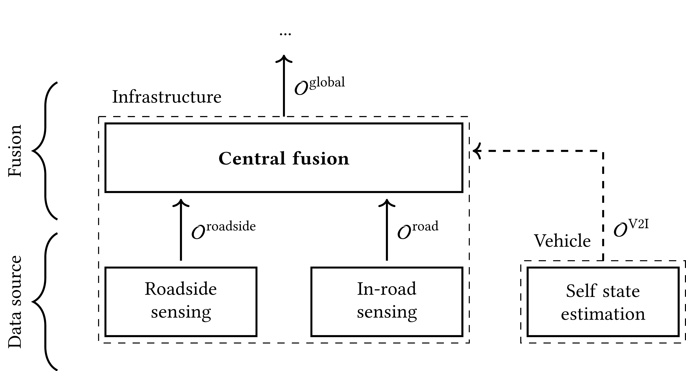

Complex Scenario
For this complex scenario we design a fully fledged infrastructure-based perception system using all the components that Ufil provides.
The scenario is composed of a single section of road using an in-road sensing approach with ufil_ssl, a single lidar sensor node placed on the side of the road using ufil_osn, and multiple vehicles equipped with a V2X communication system using ufil_obu.
The scenario is designed to be as close as possible to a real-world scenario.
{kind=link}

Sensitive Surface Layer (ufil_ssl)
The ufil_ssl component implements the SSL-based in-road sensing pipeline and converts raw load measurements into an object list in the map frame.
It subscribes to a grid of load cells (e.g. nav_msgs/OccupancyGrid) representing the measured surface pressure distribution and applies the three-stage processing chain from the thesis: wheel detection, wheel tracking, and vehicle identification.
Wheel detection operates on each pressure map by extracting local maxima and computing intensity-weighted centroids inside a dilation area around each maximum to obtain wheel positions that are robust to overlapping contact patches and grid discretization.
Wheel tracking uses a Kalman filter with a constant-velocity model along the lane direction and Mahalanobis-distance based association to maintain continuous wheel trajectories over time, including track confirmation and deletion logic.
Vehicle identification groups wheel tracks into rigid-body hypotheses using axle and wheel templates, checks geometric consistency (track width, axle spacing, velocity coherence), and computes a vehicle existence factor from per-wheel quality measures and the number of assigned wheels.
The resulting vehicle objects are published as ufil_msgs/ObjectList and contain state and covariance, approximate dimensions, a classification vector, axle topology (including track widths and center-to-axle distances where available), and an existence probability.
Lidar-based OSN (ufil_osn)
The ufil_osn component implements a model-based roadside lidar sensor node that performs point cloud preprocessing, object detection, tracking, dimension estimation, classification, and existence estimation.
It subscribes to sensor_msgs/PointCloud2 from a static lidar, transforms the data from the sensor frame into a ground-aligned base frame, removes ground and known static structures via height and crop-box filters, and applies voxel downsampling to reduce redundancy while preserving object shape.
Object detection is based on Euclidean clustering of the filtered point cloud followed by oriented bounding-box fitting; depending on cluster size and shape, ufil_osn uses L-shape fitting for extended objects or a cylindrical model for small or approximately circular objects.
A Kalman filter with a planar constant-velocity and yaw-rate motion model predicts and updates the 6D state (position, velocity, yaw, yaw rate) of each object, using a two-stage association scheme that first exploits predicted box overlap and then applies distance-based (e.g. Euclidean or Mahalanobis) assignment for remaining detections.
Dimensions are estimated with a 1D grid-map per axis (length, width, height); each new box measurement is integrated via a variance-aware binary Bayes update with forgetting, providing both a mean dimension and an associated variance that are robust to occasional erroneous detections.
Classification is computed from the estimated dimensions using class-conditioned normal distributions and Bayes’ rule, combining per-dimension likelihoods into a posterior over the discrete classes and normalizing to obtain the classification vector.
Existence probability can be computed either by a lightweight heuristic that aggregates age, association ratio, shape stability, and motion consistency, or by a Bayesian estimator that combines a persistence field, detection and clutter likelihoods, and recent association history.
The node publishes its results as ufil_msgs/ObjectList in the map frame, including state, covariance, dimensions with covariance, classification vector, existence probability, and an optional flag indicating whether the object is considered static.
On-Board Unit and V2I (ufil_obu)
The ufil_obu component provides the on-board unit (OBU) interface that converts vehicle self-state estimates into V2I messages and into the internal Ufil object representation.
It receives the ego vehicle’s state (e.g. fused GNSS / inertial pose and velocity) and dimensions from domain-specific interfaces, transforms positions from WGS84 into the local map frame using the WGS84→UTM→map georeferencing pipeline described in the thesis, and populates an internal object with state, covariance, and dimensions.
The OBU maps this internal object to an ETSI CAM, including position, speed, heading, and dimensions where supported by the CAM data model, and transmits the resulting messages over UDP for reception at the RSU.
Locally, ufil_obu can also publish a ufil_msgs/ObjectList for direct consumption by other ROS 2 components; in this case the classification vector is typically a one-hot encoding of the known vehicle class, and the existence probability is set to 1.0.
Resolution limits of the CAM fields and the vehicle-side state estimator’s characteristics are reflected in the covariance matrix attached to the object and propagated through the fusion pipeline.
Central Fusion on the RSU
The central fusion component on the RSU subscribes to heterogeneous object lists from ufil_ssl, ufil_osn, and ufil_obu and fuses them into a single global object list in the map frame.
It operates at the object level and follows the multi-object tracking cycle from the thesis: prediction of all global tracks to the current fusion time, association of incoming sensor objects to global tracks, update of state, dimensions, classification, and existence, and management of births and deletions.
To handle transport latency and out-of-sequence data, the RSU maintains a time-ordered buffer of incoming messages over a configurable horizon and processes them in chronological order before predicting the fused state to the publish time.
The RSU uses dynamic measurement models that select only those state components actually provided by each source, ignoring unavailable elements based on the covariance mask, and applies a Kalman update with the chosen motion model (e.g. constant velocity or random walk for pedestrians).
Dimensions are fused using the same grid-map estimator as on the roadside node, so that length, width, and height measurements from different modalities with different uncertainties are combined into a consistent estimate per object.
Classification fusion is implemented using Dempster-Shafer theory over a reduced powerset that includes both fine-grained classes and superclasses (e.g. vehicle, VRU, stationary), with sensor-specific trust values and a conflict-adaptive forgetting mechanism to avoid overconfident decisions when sources disagree.
Existence probability is fused using either the heuristic aggregation or the Bayesian estimator, again based on Dempster-Shafer theory, combining persistence, visibility, detection and clutter likelihoods, and per-sensor trust, and applying hide/delete thresholds to control publication and removal of tracks.
The fusion loop is time-triggered (e.g. at 50 Hz) and publishes ufil_msgs/ObjectList, providing a unified, uncertainty-aware description of all tracked road users suitable as input for downstream digital-twin and traffic-management components.
Example Implementations
We proivde two example implementations of the complex scenario: one using the CARLA simulator to generate synthetic sensor data and a second using real-world data from the small-scale testbed, the CPM Lab.